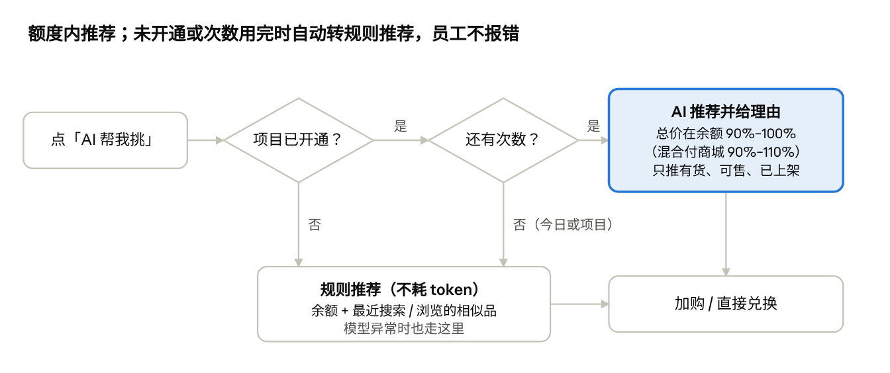

采发发 C端商城产品 Spec（V1 / V2）
Nov 6, 2026 · @sanyuan
一、概述
C 端商城分两版改造：V1（11/20） 把购物车、分类、个人中心迁到新前端并接入埋点框架，保证春节兑换高峰不出事故；V2（约 12/4–12/9） 在新前端上做统一商品展示、搜索修正、AI 选品和全流程埋点，让员工在 1 月集中兑换时顺利完成兑换。
依据：《采发发买家侧产品形态与版本规划（2026-11-03）》V1、V2 两节及其任务清单。本 Spec 只写 C 端商城（员工侧）和它直接需要的后台配套；场景货盘、项目视图、询价等会员侧内容不在本文。
1.1 为什么做
员工 1 月集中兑换，商城杂乱、搜不到货（如「搜衣架出洗衣机」），甲方会找服务商追责，影响续约和员工复购。
现有消费商城已能承载全部货源，问题在于版本老、不同货源的商品展示五花八门。
前后端仅打通订单，平台不知道员工卡在哪一步，也无法给商家提供展示、点击、成交数据。
1.2 用户与收益
| 角色 | 在 C 端商城做什么 | 本期得到什么 |
|---|---|---|
| 员工 | 进入项目商城，用福利额度找货、加购、兑换，查订单和售后 | 购物车、分类、个人中心更顺；搜得到；一句话按额度选到商品 |
| 甲方 | 给员工发额度，验收福利效果 | 福利好选、值得兑换，少收到员工投诉 |
| 服务商 | 经营商城（装修、上架、定价），对甲方负责 | 商城统一、专业，有 AI 选品卖点；能提前看到兑换卡点；续约更容易 |
| 商家 | 供货 | 拿到展示、点击、成交三层数据（V2 起积累，V4 回传） |
| 平台运营 | 控制 AI 开通范围和成本 | 按项目审批 AI 选品，用量可控、成本可算 |
1.3 两个版本一览
| V1 · 11/20 新前端首批 | V2 · 约 12/4–12/9 C 端体验版 | |
|---|---|---|
| 一句话价值 | 换前端不出事，兑换高峰购物车不卡 | 不论货从哪来，员工看到统一、好找、能帮挑的商城 |
| 范围 | 购物车、分类、个人中心迁到新前端；灰度与回退；新旧前端无缝；埋点框架 | 统一商品卡与详情；搜索修正与排序；推荐位；AI 选品（按项目开通）；全流程埋点与漏斗报表 |
| 门槛指标 | V1 整版门槛为存量 GMV 等经营指标；C 端部分以「灰度无 P0 事故、可回退、新旧前端埋点可对比」验收（本 Spec 补充） | 兑换转化率、搜索无结果率、P0 埋点覆盖率 100%、AI 采纳率与每次对话成本 |
| 不做 | 首页、搜索、详情页改版；AI 选品 | 购物车、订单、售后全货源统一（移到 V3）；语义检索、个性化推荐（Q1） |
1.4 本文口径
C 端价格：员工只看到销售价，市场价按站点配置决定是否作为划线价显示；接口价、会员价、分销价在 C 端任何位置都不出现。
额度 / 余额：员工在商城内可用于兑换的余额。混合付：余额不足时允许员工自付补差，由站点配置决定是否开启。
项目：V1 起一个存量商城自动对应一个项目；C 端产生的兑换订单都归到所在商城对应的项目。
优先级：P0 = 本版目标成立的必要条件；P1 = 工时不足可顺延下一版；P2 = 延期时最先砍。
二、V1 · 11/20 C 端新前端首批
V1 只做前后端分离的第一批：购物车、分类、个人中心三部分迁到新前端，功能与旧版等价，不加新业务逻辑。它是 V2 AI 选品和统一展示的技术底座，也是春节兑换高峰前的稳定性保障。
2.1 目标
员工开始兑换时，购物车、分类不卡，服务商不被甲方追责。
员工感知不到两套前端，存量商城换前端后不丢内容。
新前端一上线就有埋点，灰度期间能对比新旧前端。
2.2 范围
| 在范围内 | 不在范围内 |
|---|---|
| 购物车、分类、个人中心迁移（独立前端工程 + 接口层） | 首页、搜索、商品详情、结算页改版（仍用旧前端） |
| 旧配置与数据兼容 | 购物车全货源统一、订单 / 售后改造（V3，商品库切换后一起做） |
| 按站点灰度、可回退 | 用户可见的「新版 / 旧版」切换 |
| 新旧前端登录态与跳转无缝 | AI 选品、统一商品卡（V2） |
| 统一埋点框架（三部分的事件） | 全流程埋点（V2） |
2.3 功能需求
| 编号 | 需求 | 优先级 | 规则与说明 |
|---|---|---|---|
| V1-7.1 | 购物车、分类、个人中心迁到新前端 | P0 | 功能与旧版一致；顺手修掉已知体验问题（卡顿、返回后滚动位置丢失）；接口层独立，后续可被 AI 调用 |
| V1-7.2 | 旧配置与数据兼容 | P0 | 读取站点现有配置：分类配置、个人中心页装修、是否显示市场价、商品来源标签、价格标签、支付限制等；员工已有购物车商品在切换后保留 |
| V1-7.3 | 按站点灰度、可回退 | P0 | 运营可按站点开启新前端；三部分可分别回退旧前端；回退不影响员工购物车数据 |
| V1-7.4 | 新旧前端无缝 | P0 | 登录态共享，不重复登录；旧详情页加购 → 新购物车 → 旧结算页链路通畅；底部导航与样式一致 |
| V1-7.5 | 接入统一埋点框架 | P0 | 见 2.4；所有事件带新旧前端标记 |
| V1-4.6 / 4.7（关联） | C 端订单挂到项目、带货源类型 | P0 | 员工兑换订单按「商城 → 项目」映射写入项目 ID；订单记录货源类型。属于买家侧项目需求，C 端下单链路需配合 |
三个页面的要点
购物车：展示商品、规格、销售价、数量；改数量、删除、勾选、去结算；无货 / 地区不可售的商品标出并不可结算。员工未设收货地区时，按商城默认三级地址判断可售。商品分组和拆单逻辑沿用旧版。
分类：按站点现有分类配置展示一级 / 二级分类及商品列表；服务商已设的置顶商品顺序不变；从商品详情返回时保留分类和滚动位置。统一类目映射留到 V2。
个人中心：按站点「个人中心页」装修配置渲染；余额 / 额度、订单入口、售后入口、收货地址、客服等入口与旧版一致；订单列表和详情仍跳旧前端。
2.4 埋点（V1 范围）
公共字段在 V1 就定下，V2 只加事件不改字段：站点 ID、项目 ID、服务商 ID、员工匿名 ID、前端版本（新 / 旧）、终端、页面、会话 ID、时间。商品类事件另带商品 ID / SKU ID 与货源类型。
| 页面 | 事件 |
|---|---|
| 购物车 | 页面浏览、商品曝光与点击、改数量、删除、勾选、去结算 |
| 分类 | 页面浏览、分类点击、商品曝光与点击、加购 |
| 个人中心 | 页面浏览、各入口点击 |
2.5 验收标准
灰度站点上，三个页面功能与旧版逐项对照一致，无 P0 缺陷
现金商城、积分商城及三种货源（平台货、自有供应商货、猫超 / 优品权益货）各跑一遍加购 → 结算
旧详情页加购后进入新购物车，不重新登录，购物车数据一致
任一部分可单独回退旧前端，回退后员工购物车不丢
2.4 全部事件有测试用例并带新旧前端标记
C 端下单后，订单带项目 ID 和货源类型
C 端任何页面不出现接口价、会员价、分销价
三、V2 · 约 12/4–12/9 C 端商城体验版
V2 让员工在项目商城里顺利完成兑换：商品展示统一、搜得到、按额度有人帮挑，并用全流程埋点定位卡点。AI 选品和统一展示放在本版，不压缩工期，保证质量。
3.1 目标与门槛
| 门槛指标 | 口径 |
|---|---|
| 兑换转化率 | 进入商城的员工中，完成至少一笔兑换的占比 |
| 搜索无结果率 | 无结果搜索次数 ÷ 搜索总次数 |
| P0 埋点覆盖率 | 上线前须达 100% |
| AI 采纳率 | 发生过 AI 推荐加购或兑换的对话 ÷ AI 对话数 |
| 每次对话成本 | 模型账单 ÷ 计次对话数，事后核算 |
门槛具体数值待灰度数据出来后定（见待确认）。
3.2 范围
| 模块 | 优先级 | 一句话价值 |
|---|---|---|
| V2-1 统一商品展示 | P0 | 不同货源不再五花八门，也是 AI 推荐的展示载体 |
| V2-2 找得到 | P0 | 员工找到想要的商品，兑换转化提升 |
| V2-3 看得懂（补充） | P2 | 选得更有依据，商家品牌有曝光 |
| V2-5 全流程埋点 | P0 | 每一步有数，定位卡点，积累商家三层数据 |
| V2-6 C 端商城 AI 选品 | P0 | 员工按额度快速选到商品，服务商商城有卖点 |
3.3 统一商品展示（V2-1）
| 编号 | 需求 | 优先级 | 规则 |
|---|---|---|---|
| V2-1.1 | 全货源统一商品卡与详情模板 | P0 | 平台货、京东、猫超 / 优品、自有供应商货共用一套模板。商品卡：主图、名称、销售价、划线价（站点配置开启时）、营销标签、无货 / 不可售状态。详情：轮播图、价格区、规格选择、配送与可售地区、售后说明（如支持 7 天无理由）、图文详情。字段缺失时该块不展示，不显示空值 |
| V2-1.2 | 关键样式对标天猫超市并固定 | P0 | 商品卡、价格区、加购按钮、详情页结构不开放站点自定义；站点只保留主题色、是否显示市场价等现有开关 |
3.4 找得到（V2-2）
| 编号 | 需求 | 优先级 | 规则 |
|---|---|---|---|
| V2-2.1 | 搜索修正 | P0 | 分词修正，解决「搜衣架出洗衣机」。无结果时不留空白：提示换词 + 展示无结果页推荐位 + AI 助手入口（已开通时） |
| V2-2.2 | 规则排序 | P1 | 综合排序按相关性、销量、价格加权；员工可切换销量、价格排序；服务商置顶商品优先 |
| V2-2.3 | 分类整理 | P1 | 各货源类目映射到统一类目，分类页与搜索筛选口径一致 |
| V2-2.4 | 预留「平台核心供给」权重位 | P2 | 只留参数，权重默认 0，规则等卖家侧定 |
| V2-2.5 | 搜索热词与联想 | P1 | 热词 = 本商城近 7 天有结果的热搜词 + 服务商配置的推荐词；联想按商品名、品牌、类目前缀匹配 |
| V2-2.6 | 推荐位规则 | P1 | 位置：首页、详情页、购物车、无结果页。排序：本商城热销、同类目热销、额度内可兑换；不做个性化 |
3.5 看得懂（V2-3，P2）
V2-3.3 评价 / 好评率、热度展示：评价和好评率仅京东商品有，其他货源不显示该块。
V2-3.4 品牌 / 店铺展示：店铺形态规则未定，本版先做品牌。
两项在延期时优先砍。
3.6 C 端商城 AI 选品（V2-6）
AI 助手不另开入口，放在新前端搜索结果页；搜索功能保持不变。只在已开通 AI 的项目商城显示，推荐范围限当前商城已上架商品。

C 端 AI 选品流程 · 2 个判断、1 个降级出口
未开通、次数用完、模型异常三种情况都落到规则推荐，员工始终能拿到一组额度内的商品。
员工侧规则
| 编号 | 需求 | 优先级 | 规则 |
|---|---|---|---|
| V2-6.1 | 入口 | P0 | 搜索结果页显示「AI 帮我挑」入口；进入后提示「今日可对话 N 次」 |
| V2-6.2 | 理解需求和额度，推荐并给理由 | P0 | 读取员工当前余额。未开混合付的商城，推荐组合总价在余额的 90%–100%；允许混合付的商城在 90%–110%。只推荐有货、员工收货地区可售的商品（无地址时用商城默认三级地址）。每件商品配一句推荐理由 |
| V2-6.3 | 推荐直接加购或兑换 | P0 | 单件加购、整组加购、直接去兑换；产生的订单来源记为「AI 选品」 |
| V2-6.5 | 商品字段可读性检查与补齐 | P0 | 推荐前校验名称、价格、类目、库存；不全的商品不进推荐 |
| V2-6.6 | 无结果回退 | P1 | AI 无法给出推荐时，引导回搜索和分类 |
| V2-6.10 | 规则推荐降级 | P1 | 未开通、次数用完或模型异常时，按员工余额 + 最近搜索 / 浏览的相似品推荐，不耗 token；员工侧不报错 |
| V2-6.8 | 常见问法评测集 | P1 | 约 50 条（如「500 元买点年货」「给父母买健康的」），上线前跑一遍，逐条记录是否合格 |
开通与用量管控（前期 token 由平台买单，开通范围由平台控制）
| 编号 | 需求 | 优先级 | 规则 |
|---|---|---|---|
| V2-6.4 | 按项目开通 | P0 | 服务商在项目视图里申请，运营在运营管理后台审批；通过后该项目下所有商城显示 AI 入口。服务商可看本项目用量和带来的兑换，不能自行开启 |
| V2-6.9 | 用量管控（按对话次数，不做 token 计量） | P0 | 起步值，运营可调：项目总次数 = 发放人数 × 3；每人每天 5 次；一次对话内追问 3 轮不另计；同样问法复用结果不计次；兑换期结束自动关闭；项目次数用到 80% 提醒运营，可追加；员工次数用完自动切到规则推荐 |
3.7 全流程埋点（V2-5）
在 V1 公共字段和框架上扩展，展示、点击、成交分开统计、分开回传。曝光 = 商品卡在屏幕内可见（具体阈值写入事件字典）。
| 编号 | 环节 | 优先级 | 事件 |
|---|---|---|---|
| V2-5.1 | 规范与事件字典 | P0 | 命名规则、公共字段、曝光口径、上报方式、新旧前端标记 |
| V2-5.4 | 进入与浏览 | P0 | 进入商城、登录（成功 / 失败）、页面浏览与停留、首页模块曝光与点击、离开 |
| V2-5.5 | 找货 | P0 | 分类点击、搜索（关键词、结果数）与结果点击、推荐位曝光与点击、商品曝光与点击、详情浏览 |
| V2-5.6 | 交易 | P0 | 加购、购物车操作、去结算、提交兑换、兑换成功 / 失败（原因：额度不足 / 无货 / 地区不可售） |
| V2-5.7 | AI 选品 | P0 | 打开入口、提问、推荐曝光、推荐点击、推荐加购与兑换、回退到搜索 / 分类、降级为规则推荐；每次对话记录是否计次 |
| V2-5.2 | 兑换订单归到项目 | P0 | 订单带项目 ID、订单来源、货源类型 |
| V2-5.8 | 订单与个人中心 | P1 | 订单查看、物流查看、售后申请（原因类型）、额度查询 |
| V2-5.3 | 关注商品 | P2 | 员工关注 / 取消关注，商家多一项兴趣数据 |
| V2-5.9 | 埋点验收 | P0 | 每个事件有测试用例；上线前 P0 事件覆盖 100%；新旧前端可对比 |
| V2-5.10 | 内部漏斗与指标报表（BI） | P1 | 进入 → 浏览 → 加购 → 兑换转化、搜索无结果率、AI 采纳率、额度使用率、未兑换余额 |
3.8 验收标准
三种货源商品在商品卡、详情页上布局一致，站点无法改动固定样式
「衣架」等已知 bad case 搜索结果正确；无结果页有推荐和引导，不留空白
AI 推荐组合总价落在额度区间内，不推无货、不可售、本商城未上架的商品
未开通项目不显示 AI 入口；次数用完、模型异常时自动降级为规则推荐，员工无报错
评测集约 50 条跑完，结果归档
P0 埋点覆盖 100%，漏斗报表能算出 3.1 全部门槛指标
四、边界、依赖与待确认
两版都不动购物车 / 订单 / 售后的业务逻辑，全货源统一放到 V3 商品库切换后一次改到位。工时不足时先砍 P2，再顺延 P1，P0 不动。
4.1 本轮不做
| 事项 | 去向 |
|---|---|
| 购物车、订单、售后全货源统一（含猫超取消退款） | V3 |
| 语义检索、个性化推荐、商城 AI 生图 | Q1 及以后 |
| 会员端 / 运营端 AI 选品、AI 建商城 | Q1 |
| token 计量体系（本期按对话次数管控） | 后续 |
| 商家补贴标识、推荐权重规则 | 依赖卖家侧规则，本轮只预留位置 |
| 商家可见的展示 / 点击 / 成交数据 | V2 只采集，V4 回传 |
4.2 依赖
V2 依赖 V1：新前端工程、灰度机制、埋点框架。搜索结果页和详情页在 V2 迁到新前端，AI 入口才有地方放。
项目关系（V1-4）：商城 → 项目映射上线后，C 端订单才能归项目，AI 才能按项目开通。
项目视图（V1-5）：服务商申请 AI 、查看用量的入口。
商品数据：统一类目映射、字段补齐依赖商品运营补充字段（V1-6）与 3.0 商品数据清洗。
运营管理后台：AI 开通审批、次数配置与 80% 提醒。
4.3 待确认
新前端灰度范围：现金商城、积分商城是否同时覆盖；首批灰度哪些站点。
V2 搬到新前端的页面清单：搜索结果页、详情页是否全部迁移，首页是否仍走装修。
「兑换期结束自动关闭 AI」的兑换期从哪里取：项目字段里目前没有兑换期。
「发放人数」的取数口径：商城用户数还是实际发放额度的人数。
统一商品卡是否显示货源标签（如京东、天猫超市），还是继续由站点配置决定。
V2 门槛的具体数值（兑换转化率、搜索无结果率、AI 采纳率、每次对话成本上限）。
混合付下 AI 推荐超出余额部分（最多 10%）是否需要在推荐卡上提示「需自付 ¥x」。